FM Piano: accuracy report
Renders of the Rust FM engine (dry, mono, fitted Concert Grand tone) analysed with the same code as the Salamander Grand Piano V3 recordings they were fitted to. Band error is the RMS difference of time-smoothed ERB-band spectrograms (dB, 10 ms to 8 s, weighted towards loud bands), bias its mean (positive = FM louder), partials the RMS level error of partials 1–8 at 0.1, 0.5 and 2 s. Decay rates are of the RMS envelope (dB/s) over 0.1–1 s and 1–4 s; centroid in Hz at 0.1 s; pitch of partial 1 in cents re. 12-TET; B is the measured inharmonicity. Pairs are recording / FM.
Mean band error 5.78 dB, mean partial error 4.84 dB over 90 notes.
Error map · Overview · Back to the piano


| key | layer | band dB | bias | partials dB | peak Δ dB | decay 0.1–1 s | decay 1–4 s | centroid | cents | B | |
|---|---|---|---|---|---|---|---|---|---|---|---|
| A0 | 4 | 4.26 | -0.69 | 4.72 | -2.8 | -4.7 / -3.0 | -3.0 / -2.6 | 164 / 169 | -17.1 / -20.5 | 2.27e-04 / 2.01e-04 | plot |
| A0 | 10 | 4.37 | -1.18 | 5.46 | -3.4 | -4.6 / -3.1 | -3.2 / -2.8 | 210 / 201 | -16.7 / -20.7 | 2.26e-04 / 2.01e-04 | plot |
| A0 | 16 | 5.82 | -1.82 | 5.79 | -3.0 | -5.1 / -3.5 | -3.5 / -2.9 | 270 / 241 | -18.0 / -20.4 | 2.28e-04 / 2.02e-04 | plot |
| C1 | 4 | 4.00 | -0.59 | 10.32 | -2.6 | -8.9 / -5.4 | -2.6 / -2.5 | 158 / 160 | -18.7 / -18.2 | 1.69e-04 / 1.68e-04 | plot |
| C1 | 10 | 4.06 | -1.04 | 7.47 | +0.3 | -8.5 / -8.0 | -2.5 / -2.4 | 177 / 162 | -17.8 / -18.0 | 1.67e-04 / 1.68e-04 | plot |
| C1 | 16 | 5.20 | -1.88 | 7.78 | -1.0 | -8.0 / -6.4 | -2.6 / -2.5 | 221 / 196 | -18.3 / -18.1 | 1.72e-04 / 1.68e-04 | plot |
| D#1 | 4 | 3.50 | -0.34 | 4.68 | -2.0 | -4.2 / -3.4 | -2.6 / -2.3 | 171 / 172 | -9.0 / -13.1 | 1.33e-04 / 1.28e-04 | plot |
| D#1 | 10 | 3.56 | -0.69 | 4.11 | -2.5 | -4.3 / -3.4 | -2.6 / -2.4 | 224 / 195 | -9.8 / -13.1 | 1.37e-04 / 1.28e-04 | plot |
| D#1 | 16 | 4.61 | -1.25 | 4.52 | -2.5 | -5.0 / -3.6 | -2.6 / -2.5 | 288 / 250 | -10.2 / -13.1 | 1.41e-04 / 1.28e-04 | plot |
| F#1 | 4 | 3.68 | -0.14 | 6.06 | -1.0 | -4.2 / -4.6 | -3.0 / -3.2 | 134 / 139 | -8.5 / -9.9 | 8.80e-05 / 9.79e-05 | plot |
| F#1 | 10 | 3.62 | -0.41 | 5.61 | -0.8 | -3.9 / -4.1 | -2.9 / -3.4 | 146 / 150 | -8.2 / -10.5 | 8.78e-05 / 9.86e-05 | plot |
| F#1 | 16 | 3.80 | -0.83 | 5.40 | -1.0 | -3.9 / -4.0 | -3.0 / -3.4 | 164 / 163 | -8.6 / -10.5 | 8.74e-05 / 9.87e-05 | plot |
| A1 | 4 | 3.87 | -0.71 | 6.01 | +1.1 | -5.7 / -7.0 | -4.1 / -5.6 | 163 / 151 | -6.0 / -8.0 | 8.94e-05 / 8.85e-05 | plot |
| A1 | 10 | 3.32 | -0.49 | 5.42 | +0.3 | -5.6 / -7.0 | -4.2 / -5.8 | 179 / 165 | -5.7 / -8.7 | 8.85e-05 / 8.88e-05 | plot |
| A1 | 16 | 3.75 | -0.88 | 6.16 | +0.8 | -5.7 / -7.5 | -4.3 / -5.8 | 267 / 204 | -5.7 / -8.5 | 8.78e-05 / 8.88e-05 | plot |
| C2 | 4 | 4.15 | -0.43 | 4.22 | -0.3 | -19.5 / -16.2 | -3.3 / -2.5 | 179 / 178 | -7.4 / -7.5 | 8.96e-05 / 8.53e-05 | plot |
| C2 | 10 | 3.88 | -0.56 | 4.33 | +0.2 | -19.9 / -17.0 | -3.2 / -2.5 | 207 / 204 | -7.1 / -6.9 | 8.90e-05 / 8.52e-05 | plot |
| C2 | 16 | 4.05 | -0.84 | 5.17 | +0.3 | -19.6 / -18.2 | -3.0 / -2.4 | 248 / 223 | -7.1 / -7.0 | 8.87e-05 / 8.52e-05 | plot |
| D#2 | 4 | 3.66 | -0.88 | 3.79 | -2.0 | -9.6 / -8.7 | -3.2 / -4.1 | 177 / 243 | -3.0 / -6.0 | 7.65e-05 / 7.88e-05 | plot |
| D#2 | 10 | 3.65 | -0.88 | 3.97 | -2.0 | -9.7 / -8.8 | -3.3 / -4.2 | 193 / 268 | -2.9 / -6.0 | 7.66e-05 / 7.90e-05 | plot |
| D#2 | 16 | 3.49 | -0.91 | 4.48 | -2.1 | -10.5 / -8.5 | -3.4 / -4.2 | 231 / 312 | -2.8 / -6.1 | 7.57e-05 / 7.85e-05 | plot |
| F#2 | 4 | 5.71 | -1.42 | 6.55 | -2.3 | -8.0 / -7.6 | -7.0 / -6.7 | 141 / 144 | -3.6 / -4.0 | 7.21e-05 / 7.36e-05 | plot |
| F#2 | 10 | 5.00 | -1.22 | 6.27 | -1.8 | -7.8 / -7.6 | -6.7 / -6.4 | 161 / 164 | -3.2 / -4.0 | 7.17e-05 / 7.32e-05 | plot |
| F#2 | 16 | 4.29 | -1.08 | 5.29 | -2.5 | -8.0 / -7.3 | -6.4 / -6.1 | 182 / 190 | -3.1 / -4.7 | 7.14e-05 / 7.52e-05 | plot |
| A2 | 4 | 4.42 | -0.73 | 5.36 | -2.0 | -7.8 / -7.8 | -2.2 / -5.4 | 204 / 254 | -0.5 / -3.1 | 7.61e-05 / 8.20e-05 | plot |
| A2 | 10 | 4.52 | -0.65 | 5.51 | -1.6 | -8.1 / -8.4 | -2.1 / -5.3 | 225 / 279 | -0.6 / -3.1 | 7.65e-05 / 8.21e-05 | plot |
| A2 | 16 | 4.94 | -0.84 | 5.14 | -1.9 | -8.8 / -8.5 | -2.0 / -5.2 | 298 / 355 | -0.4 / -3.6 | 7.63e-05 / 8.31e-05 | plot |
| C3 | 4 | 3.57 | +0.49 | 3.02 | -1.3 | -16.2 / -16.4 | -5.0 / -4.9 | 160 / 172 | -5.7 / -2.3 | 1.11e-04 / 1.01e-04 | plot |
| C3 | 10 | 3.59 | +0.38 | 2.94 | -0.8 | -15.0 / -15.6 | -5.1 / -5.0 | 167 / 178 | -5.2 / -2.7 | 1.10e-04 / 1.03e-04 | plot |
| C3 | 16 | 3.66 | +0.33 | 2.68 | -1.1 | -13.4 / -15.2 | -5.1 / -5.0 | 177 / 187 | -5.0 / -3.1 | 1.10e-04 / 1.04e-04 | plot |
| D#3 | 4 | 4.91 | -1.66 | 5.80 | -3.1 | -12.5 / -11.1 | -6.8 / -6.9 | 274 / 292 | -2.7 / -1.9 | 1.27e-04 / 1.27e-04 | plot |
| D#3 | 10 | 4.90 | -1.14 | 8.46 | -1.3 | -12.9 / -13.2 | -6.8 / -6.4 | 290 / 336 | -2.6 / -2.1 | 1.26e-04 / 1.27e-04 | plot |
| D#3 | 16 | 4.45 | -1.07 | 5.21 | -2.0 | -13.5 / -12.7 | -6.1 / -6.5 | 321 / 366 | -2.4 / -2.8 | 1.26e-04 / 1.31e-04 | plot |
| F#3 | 4 | 6.18 | -2.37 | 5.90 | -0.6 | -10.3 / -10.9 | -5.9 / -7.2 | 502 / 496 | -4.4 / -2.4 | 1.71e-04 / 1.68e-04 | plot |
| F#3 | 10 | 5.66 | -1.90 | 5.52 | -1.9 | -11.5 / -12.0 | -7.7 / -7.1 | 572 / 516 | -4.6 / -1.8 | 1.71e-04 / 1.67e-04 | plot |
| F#3 | 16 | 5.87 | -1.81 | 5.27 | -3.2 | -12.2 / -11.3 | -7.5 / -6.9 | 662 / 584 | -4.3 / -2.0 | 1.70e-04 / 1.68e-04 | plot |
| A3 | 4 | 5.36 | -1.33 | 2.73 | -4.5 | -8.9 / -9.9 | -4.4 / -6.0 | 337 / 356 | -0.2 / -1.0 | 2.16e-04 / 2.11e-04 | plot |
| A3 | 10 | 5.35 | -1.38 | 3.65 | -3.8 | -9.9 / -11.6 | -4.6 / -5.8 | 437 / 439 | -0.1 / -1.3 | 2.16e-04 / 2.15e-04 | plot |
| A3 | 16 | 5.96 | -1.69 | 4.37 | -4.7 | -12.0 / -12.4 | -4.7 / -4.8 | 623 / 582 | +0.2 / -1.6 | 2.15e-04 / 2.17e-04 | plot |
| C4 | 4 | 4.68 | -1.17 | 4.92 | +1.6 | -23.3 / -30.6 | -0.6 / -1.6 | 445 / 454 | -0.8 / -0.7 | 2.90e-04 / 2.74e-04 | plot |
| C4 | 10 | 5.77 | -2.13 | 6.61 | -0.8 | -23.3 / -24.5 | -1.6 / -2.3 | 476 / 464 | -0.6 / -1.2 | 2.90e-04 / 2.83e-04 | plot |
| C4 | 16 | 5.73 | -1.95 | 6.34 | +1.1 | -23.5 / -28.9 | -1.0 / -2.0 | 508 / 496 | -0.6 / -1.0 | 2.90e-04 / 2.82e-04 | plot |
| D#4 | 4 | 4.45 | -1.11 | 3.99 | -1.0 | -21.8 / -20.3 | -5.4 / -3.3 | 469 / 426 | -0.2 / -0.6 | 3.67e-04 / 3.54e-04 | plot |
| D#4 | 10 | 3.84 | -0.89 | 3.62 | -0.1 | -23.3 / -20.9 | -5.5 / -3.5 | 521 / 460 | -0.3 / -1.3 | 3.68e-04 / 3.69e-04 | plot |
| D#4 | 16 | 3.97 | -1.11 | 4.47 | -0.3 | -25.5 / -22.4 | -5.5 / -3.6 | 546 / 489 | -0.0 / -1.3 | 3.67e-04 / 3.75e-04 | plot |
| F#4 | 4 | 3.20 | -0.52 | 3.69 | -0.3 | -19.6 / -22.2 | -4.6 / -1.9 | 469 / 460 | -2.4 / -0.8 | 5.15e-04 / 4.69e-04 | plot |
| F#4 | 10 | 3.59 | -0.65 | 4.14 | -0.4 | -20.9 / -23.7 | -4.5 / -2.1 | 528 / 514 | -2.6 / -1.6 | 5.16e-04 / 4.93e-04 | plot |
| F#4 | 16 | 4.01 | -0.98 | 4.56 | -0.6 | -21.3 / -23.8 | -4.6 / -2.5 | 564 / 546 | -2.2 / -0.5 | 5.11e-04 / 4.93e-04 | plot |
| A4 | 4 | 4.19 | -0.82 | 3.91 | -0.0 | -33.1 / -35.7 | -2.5 / -2.5 | 459 / 460 | +1.5 / +1.0 | 6.33e-04 / 5.86e-04 | plot |
| A4 | 10 | 4.09 | -0.75 | 3.51 | +0.2 | -37.5 / -34.1 | -3.0 / -3.2 | 485 / 486 | +1.2 / -0.9 | 6.37e-04 / 6.45e-04 | plot |
| A4 | 16 | 4.83 | -1.53 | 3.48 | -0.3 | -37.9 / -33.3 | -3.8 / -3.4 | 521 / 511 | +1.1 / -1.0 | 6.39e-04 / 6.46e-04 | plot |
| C5 | 4 | 4.59 | -0.51 | 3.18 | -0.9 | -31.8 / -28.1 | -4.4 / -2.9 | 618 / 606 | +3.2 / +1.5 | 8.29e-04 / 7.88e-04 | plot |
| C5 | 10 | 5.01 | -1.40 | 3.31 | -2.2 | -30.0 / -27.8 | -4.6 / -2.9 | 732 / 714 | +2.8 / +0.5 | 8.38e-04 / 8.27e-04 | plot |
| C5 | 16 | 5.16 | -1.94 | 3.66 | -2.6 | -30.5 / -27.5 | -5.3 / -3.2 | 959 / 984 | +3.1 / +0.3 | 8.23e-04 / 8.29e-04 | plot |
| D#5 | 4 | 5.13 | -1.55 | 4.34 | -0.8 | -16.6 / -29.3 | -2.6 / -3.1 | 645 / 640 | +3.4 / +3.0 | 1.08e-03 / 1.03e-03 | plot |
| D#5 | 10 | 5.40 | -1.56 | 5.02 | -1.4 | -17.2 / -26.0 | -3.0 / -3.5 | 674 / 683 | +3.0 / +3.1 | 1.08e-03 / 1.02e-03 | plot |
| D#5 | 16 | 6.40 | -2.38 | 5.17 | -3.3 | -19.8 / -22.5 | -3.7 / -4.3 | 759 / 835 | +3.3 / +2.3 | 1.08e-03 / 1.03e-03 | plot |
| F#5 | 4 | 4.62 | -0.71 | 3.17 | -0.4 | -34.7 / -42.2 | -3.1 / -2.9 | 742 / 739 | +2.8 / +6.2 | 1.46e-03 / 1.09e-03 | plot |
| F#5 | 10 | 4.12 | -0.86 | 2.77 | -0.4 | -38.8 / -43.1 | -3.5 / -2.9 | 743 / 742 | +2.8 / +1.7 | 1.45e-03 / 1.43e-03 | plot |
| F#5 | 16 | 3.91 | -1.16 | 2.08 | -0.8 | -42.2 / -43.8 | -4.0 / -3.0 | 749 / 750 | +3.2 / +2.8 | 1.42e-03 / 1.37e-03 | plot |
| A5 | 4 | 5.59 | -1.26 | 3.48 | -2.8 | -21.0 / -25.4 | -3.5 / -3.3 | 865 / 864 | +4.8 / +4.0 | 1.84e-03 / 1.83e-03 | plot |
| A5 | 10 | 4.86 | -1.70 | 4.05 | -2.0 | -28.0 / -32.0 | -3.2 / -3.4 | 887 / 888 | +6.8 / +3.7 | 1.77e-03 / 1.87e-03 | plot |
| A5 | 16 | 5.36 | -2.56 | 4.11 | -2.8 | -30.9 / -30.9 | -4.7 / -3.8 | 905 / 908 | +7.0 / +3.8 | 1.77e-03 / 1.86e-03 | plot |
| C6 | 4 | 7.22 | -3.35 | 4.40 | -2.2 | -19.4 / -22.6 | 0.5 / -11.4 | 963 / 995 | +6.6 / +2.8 | 2.59e-03 / 2.45e-03 | plot |
| C6 | 10 | 8.31 | -4.81 | 2.79 | -0.8 | -23.3 / -22.4 | -0.9 / -12.9 | 1354 / 1216 | +7.3 / +6.2 | 2.51e-03 / 2.46e-03 | plot |
| C6 | 16 | 7.90 | -4.62 | 4.28 | -0.3 | -25.7 / -27.1 | -2.9 / -12.7 | 1547 / 1383 | +7.2 / +6.3 | 2.53e-03 / 2.45e-03 | plot |
| D#6 | 4 | 7.57 | -3.13 | 5.00 | -1.5 | -21.5 / -21.4 | -2.3 / -5.8 | 1196 / 1197 | +10.0 / +8.6 | 3.09e-03 / 2.77e-03 | plot |
| D#6 | 10 | 8.05 | -4.09 | 4.82 | -0.7 | -22.1 / -19.8 | -2.4 / -6.8 | 1246 / 1247 | +10.1 / +10.2 | 3.07e-03 / 3.16e-03 | plot |
| D#6 | 16 | 8.17 | -4.42 | 4.40 | -0.6 | -25.9 / -23.6 | -4.2 / -6.7 | 1254 / 1280 | +9.5 / +10.4 | 3.07e-03 / 3.15e-03 | plot |
| F#6 | 4 | 7.35 | -2.78 | 2.57 | -2.2 | -17.4 / -11.3 | -4.8 / -7.0 | 1426 / 1333 | +13.7 / +7.7 | 4.40e-03 / 5.41e-03 | plot |
| F#6 | 10 | 6.88 | -2.85 | 1.43 | -0.9 | -13.1 / -11.6 | -4.9 / -8.2 | 1469 / 1448 | +11.7 / +12.8 | 4.50e-03 / 4.12e-03 | plot |
| F#6 | 16 | 7.78 | -3.69 | 2.55 | +0.3 | -12.8 / -13.2 | -6.7 / -9.5 | 1491 / 1500 | +15.9 / +16.8 | 1.54e-03 / 1.55e-03 | plot |
| A6 | 4 | 7.38 | -0.01 | 2.70 | -2.3 | -18.8 / -19.4 | -1.0 / -11.0 | 1498 / 1260 | +12.8 / +14.6 | 4.57e-03 / 5.88e-03 | plot |
| A6 | 10 | 6.41 | -0.01 | 2.25 | -1.2 | -23.6 / -20.6 | -3.1 / -11.1 | 1735 / 1560 | +10.3 / +16.3 | 5.13e-03 / 5.58e-03 | plot |
| A6 | 16 | 6.35 | -1.35 | 2.71 | -1.1 | -30.7 / -23.0 | -4.2 / -11.6 | 1826 / 1742 | +10.8 / +16.3 | 5.12e-03 / 5.57e-03 | plot |
| C7 | 4 | 8.62 | +0.25 | 1.87 | -1.2 | -25.4 / -25.9 | -2.4 / -9.0 | 1853 / 1271 | +22.6 / +11.1 | 7.43e-03 / 6.74e-03 | plot |
| C7 | 10 | 7.25 | -0.46 | 4.59 | -1.1 | -30.2 / -26.5 | -0.7 / -9.1 | 2004 / 1809 | +22.3 / +20.4 | 6.68e-03 / 5.76e-03 | plot |
| C7 | 16 | 6.78 | -1.59 | 2.35 | +0.2 | -32.5 / -29.4 | -1.9 / -9.1 | 2066 / 2024 | +21.2 / +20.4 | 7.63e-03 / 5.76e-03 | plot |
| D#7 | 4 | 9.23 | +1.94 | 5.98 | +0.9 | -16.1 / -23.1 | 0.5 / -9.0 | 1480 / 749 | +19.9 / +26.6 | 9.13e-03 / 5.64e-03 | plot |
| D#7 | 10 | 9.35 | +0.01 | 3.11 | -4.8 | -24.1 / -25.0 | -0.2 / -9.1 | 2160 / 1745 | +16.9 / +16.0 | 8.98e-03 / 6.33e-03 | plot |
| D#7 | 16 | 8.93 | -2.47 | 5.43 | +0.8 | -23.7 / -23.0 | -3.1 / -9.6 | 2344 / 2162 | +18.3 / +27.1 | 9.16e-03 / 5.61e-03 | plot |
| F#7 | 4 | 11.22 | -4.33 | 6.37 | -4.6 | -16.5 / -23.9 | 2.3 / -9.0 | 1747 / 982 | +27.4 / +26.0 | 1.20e-02 / 1.34e-02 | plot |
| F#7 | 10 | 10.48 | -4.34 | 7.72 | -1.8 | -23.1 / -25.6 | -0.8 / -9.0 | 2104 / 1715 | +27.1 / +26.0 | 1.23e-02 / 1.34e-02 | plot |
| F#7 | 16 | 11.00 | -6.22 | 4.83 | -6.0 | -28.7 / -29.6 | -1.1 / -9.1 | 2509 / 2585 | +26.7 / +29.0 | 2.12e-03 / 1.86e-03 | plot |
| A7 | 4 | 10.26 | +1.59 | 10.27 | +0.0 | -19.5 / -23.8 | -2.8 / -8.9 | 2373 / 957 | +38.5 / +58.0 | 1.52e-02 / 1.24e-02 | plot |
| A7 | 10 | 9.48 | -0.20 | 9.60 | -2.3 | -27.8 / -24.7 | -4.0 / -9.0 | 3249 / 2185 | +38.3 / +46.0 | 0.00e+00 / 0.00e+00 | plot |
| A7 | 16 | 10.05 | -3.78 | 5.13 | -0.9 | -32.2 / -30.0 | -6.4 / -9.0 | 3508 / 3008 | +38.1 / +43.8 | 1.49e-02 / 1.36e-02 | plot |
| C8 | 4 | 11.02 | -3.20 | 9.85 | -2.5 | -15.1 / -24.0 | -8.6 / -8.9 | 280 / 1001 | +99.4 / +93.5 | 1.76e-02 / 1.47e-02 | plot |
| C8 | 10 | 10.61 | -3.04 | 9.05 | -3.0 | -20.5 / -24.7 | -2.8 / -8.9 | 817 / 2175 | +99.3 / +119.1 | 0.00e+00 / 2.80e-04 | plot |
| C8 | 16 | 11.80 | -5.90 | 6.85 | -5.4 | -26.1 / -28.1 | -4.7 / -8.8 | 1695 / 3541 | +98.6 / +90.6 | 1.75e-02 / 1.51e-02 | plot |


Plots
Left: partial envelopes, recording solid, FM dashed. Right: partial spectra at 0.05, 0.5 and 2.5 s.
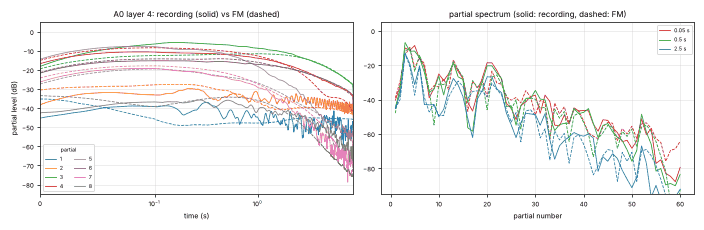
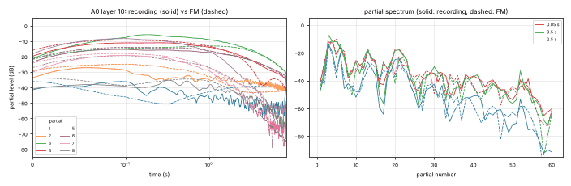
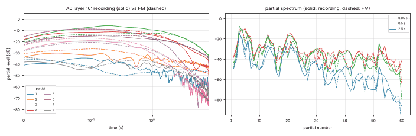
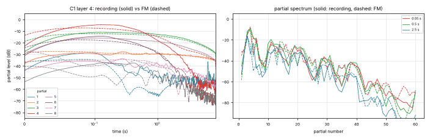
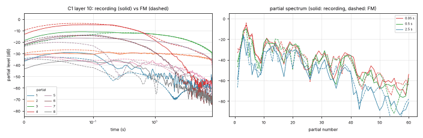
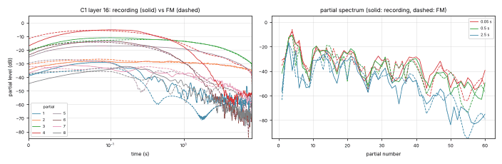
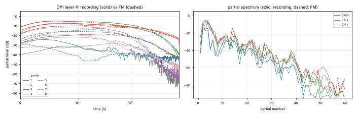
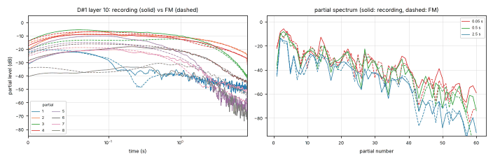
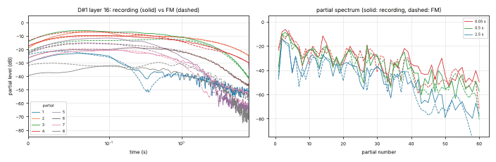
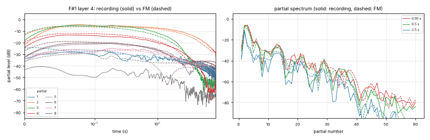
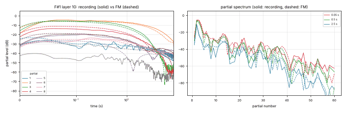
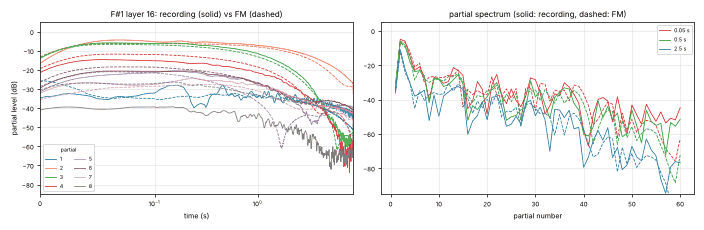
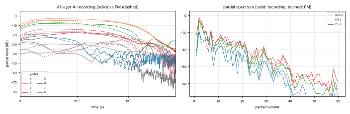
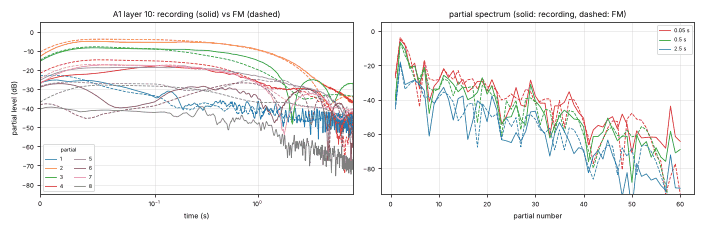
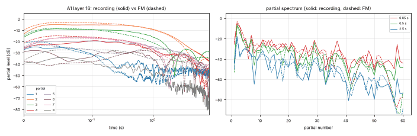
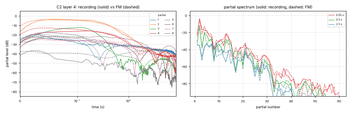
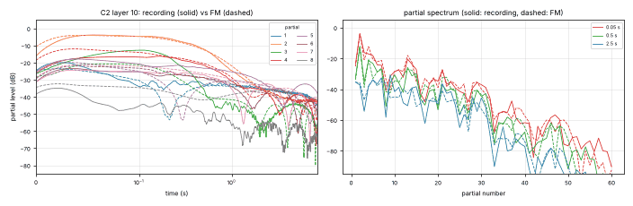
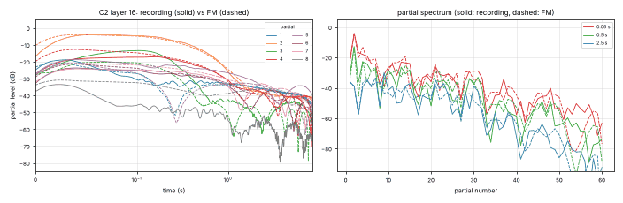
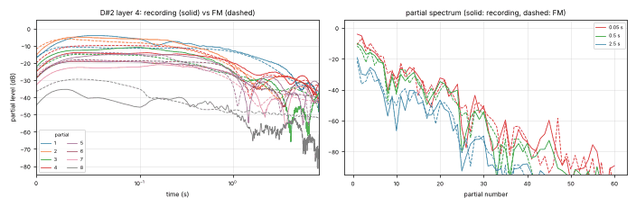
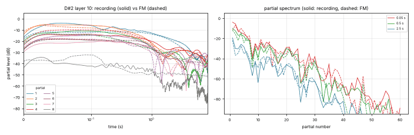
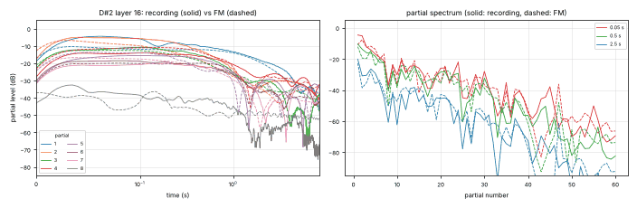
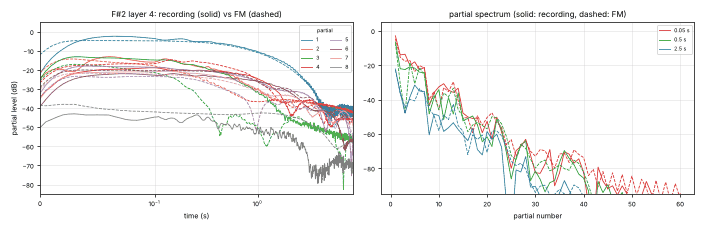
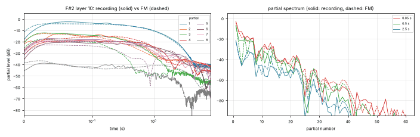
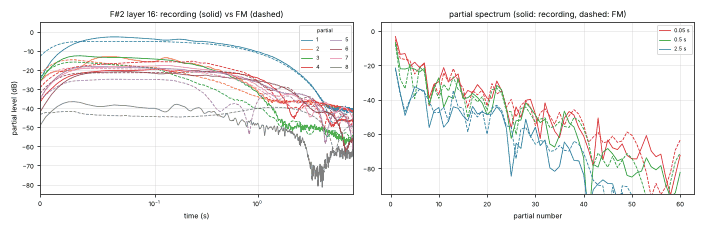
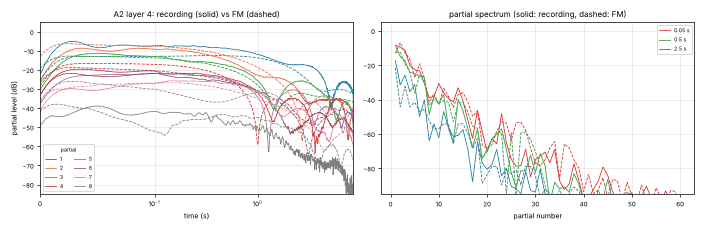
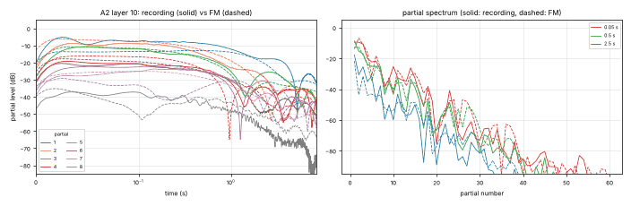
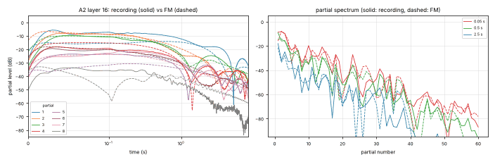
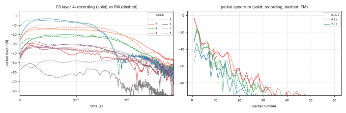
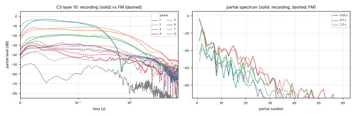
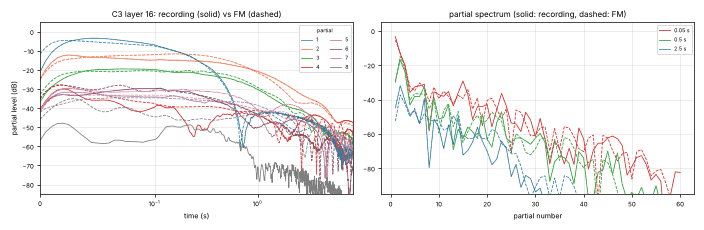
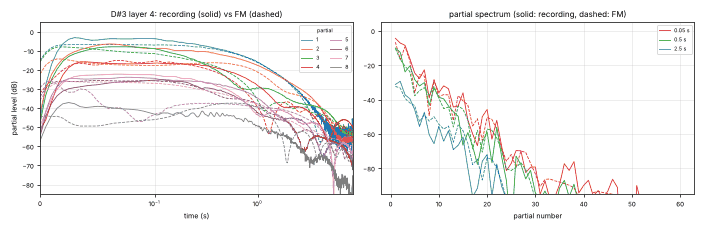
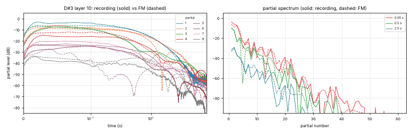
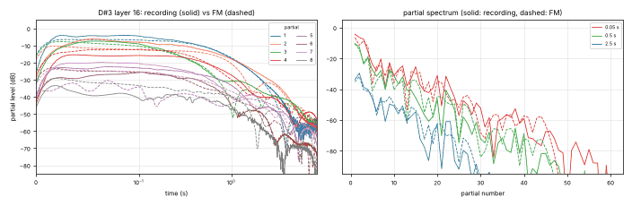
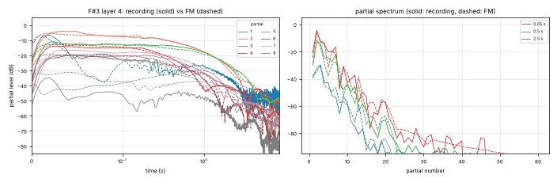
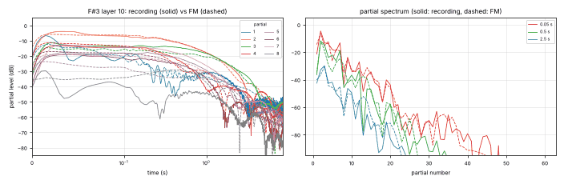
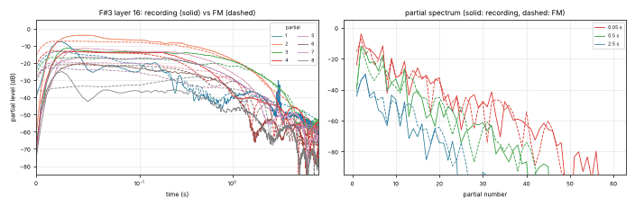
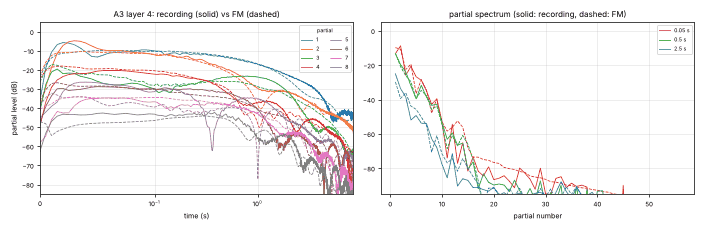
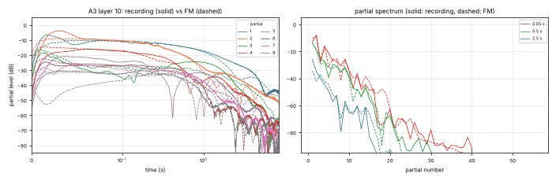
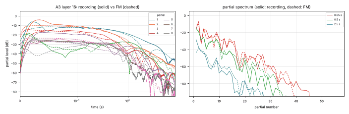
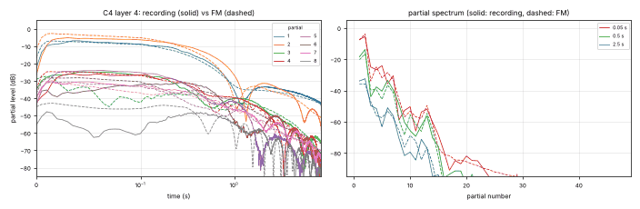
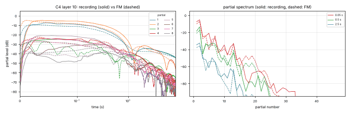
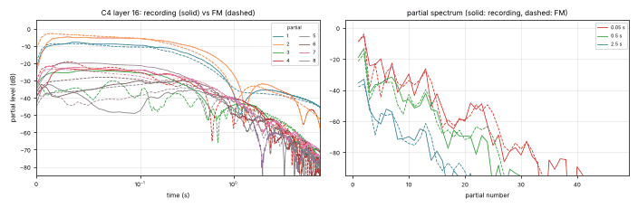
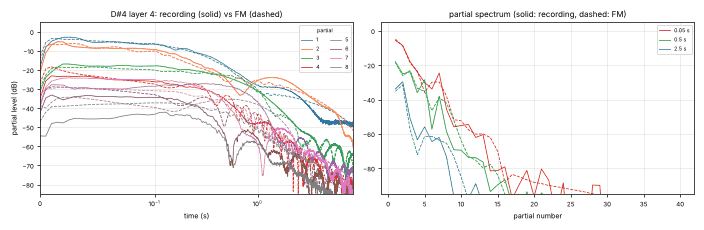
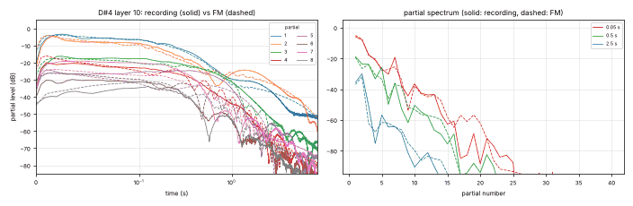
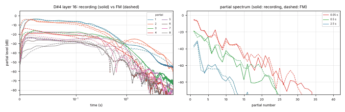
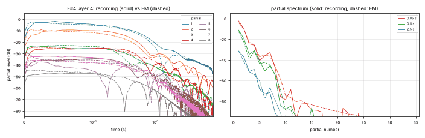
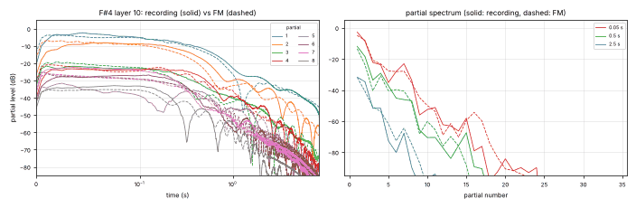
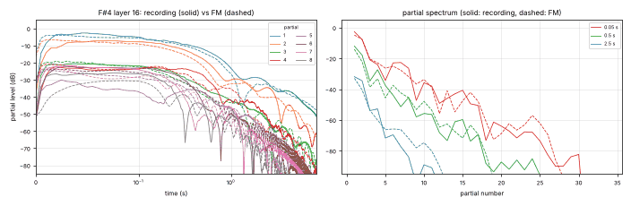
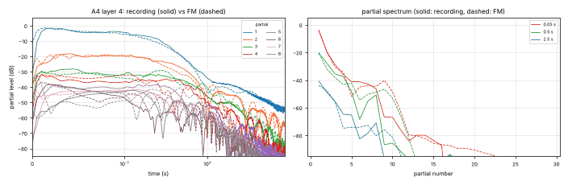
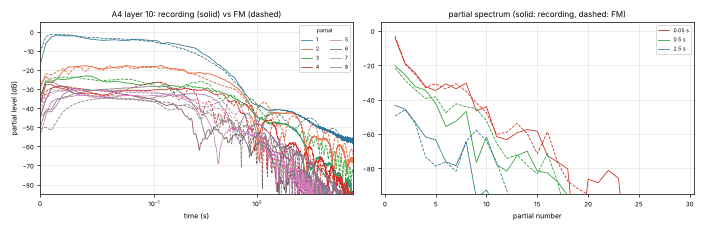